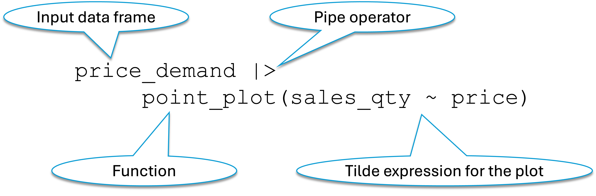
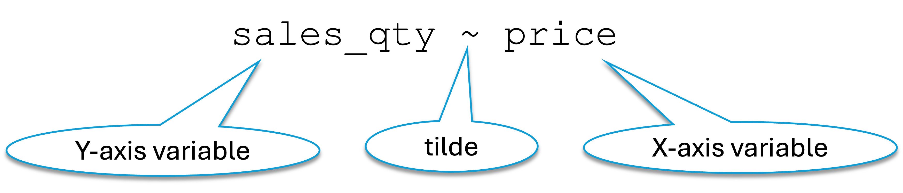
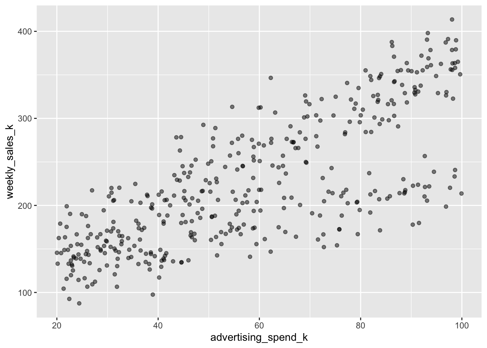
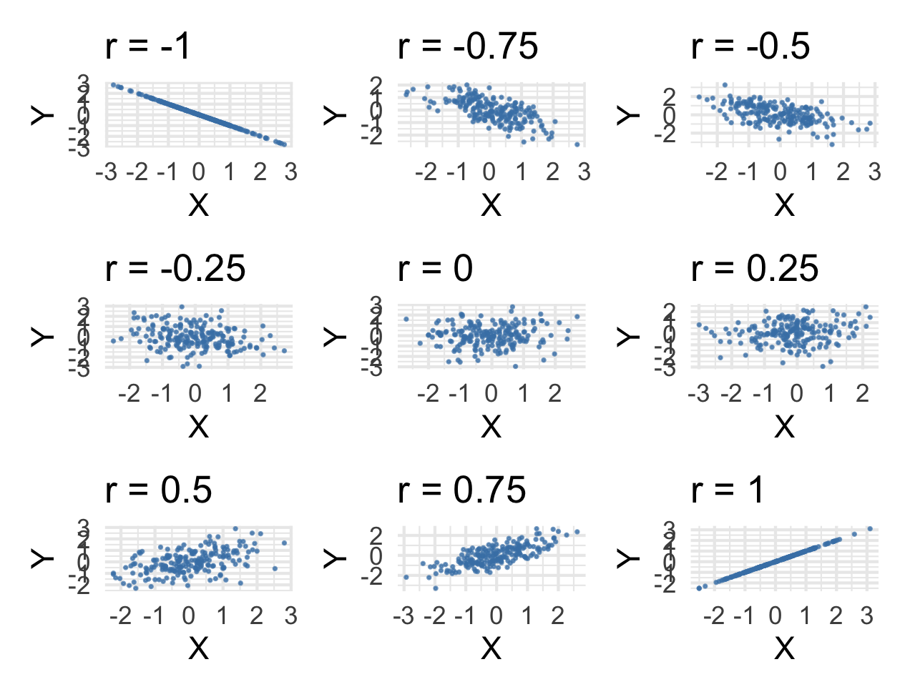
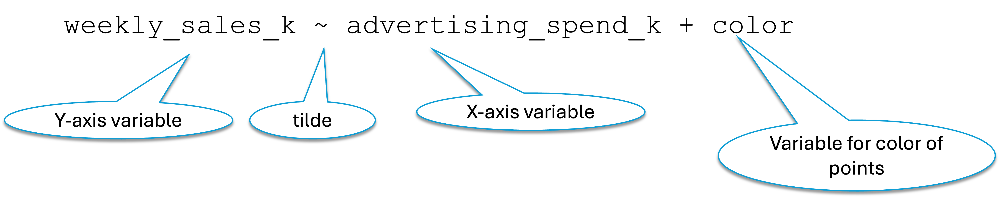

| price | sales_qty |
|---|---|
| 11.8 | 1260 |
| 12.1 | 1215 |
| 13.6 | 1214 |
| 12.3 | 1298 |
| 12.4 | 1160 |
| 13.7 | 1138 |
| 12.6 | 1174 |
| 11.2 | 1220 |
| 11.7 | 1313 |
| 11.9 | 1283 |
| 13.3 | 1170 |
| 12.6 | 1247 |
| 12.6 | 1283 |
| 12.3 | 1263 |
| 11.8 | 1259 |
2 Exploring Relationships through Scatterplots
The term statistics often conjures up thoughts of numerical computations. However, before we perform various co mputations, we often get a feel for the data and the underlying patterns by first visualizing the data. In this course we will use only a few standard plots to communicate essential statistical ideas.
In fact, use a single function – point_plot – to generate all of our plots. Although R offers numerous, sophisticated plotting features to plot almost anything we can imagine, we will keep things simple and focus only on what we need to support the concepts that our course covers.
2.1 Learning outcomes
After working though this chapter, you will be able to:
given a scatterplot of two numeric variables with the plot’s axes labeled explain precisely what determines the location of a given point
given a scatterplot of two numeric variables, the data frame on which it is based, and a specific point on the plot, identify the corresponding row in the data frame
given a scatterplot of two numeric variables, the data frame on which it is based, and a specific row in the data frame, identify the corresponding point on the plot
given a scatterplot one numeric variable on the y-axis against a categorical variable on the x-axis, explain how many different values exist for the x-axis
given a scatterplot one numeric variable on the y-axis against a categorical variable on the x-axis, explain the speific appearance of the points along the x-axis for each of the category levels
describe a tilde-expression (a model expression)
given a tilde-expression with one variable on eithert side of the tilde, state how they relate to the plot axes
given a tidle expression with two variables on the right of the tilde, expalin the mnappings of the elements of the tidle expression to the elements of the plot
given a tidle expression with two variablkes on the right of the tilde, expalin the mnappings of the elements of the tidle expression to the elements of the plot
explain why the points are jittered along the x-axis when the x-axis has a categorical variable
Given a scatterplot of a num eric variable on the y-axis and a caregorical variable on the y-axis, identify a pair of points that would have overlapped if not for jittering
use the point_plot function to
generate a scatterplot of two numeric variables
generate a scatterplot of one numeric variable on the y-axis against a categorical variable on the x-axis
generate ascatterplot of numeric variables on both axes with the points colored based on a third variable
generate ascatterplot of numeric variables on both axes with the points colored based on a third variable and the plots split into facets based on a fourth variable
2.2 Plotting the relationship between two numerical variables
The point_plot() function that we will rely on for plots in this course lives in the LSTbook package. We will be using the LSTextras package. Once we load the LSTextras package (which in turn loads the LSTbook package and all its dependencies), the point_plot() function becomes available for us to use.
Let us first look at the price_demand data frame that is built into the LSTbook package.
A hypothetical company has gathered data for a single product. Over time, and across very similar sales areas, the company has charged different prices for the same product, It has recorded the monthly sales for each price. The dataset price_demand contains the price and the corresponding sales quantities. We would like to study if the two variables price and sales_qty are related in any way.
First let us see some rows from the dataset.
The full dataset has 500 rows. With so many rows, we cannot easily get a handle on the overall pattern by looking at the data directly. Visualizing the data might help us. We will do several things in this section: - generate the plot using R code - understand how each element of the plot is related to the original dataset - understand the various elements of the code so that you can use similar code to generate plots that you many need - interpret the plot
The code and the plot appear below. For now, ignore the code. We will discuss it in detail after analyzing the plot itself.
price_demand |>
point_plot(sales_qty ~ price)
Figure 2.1 shows the relationship between price and sales_qty – the two variables in the data frame. Note the following about the plot:
- The plot has two axes – the x-axis along the width and the y-axis along tbe height.
- The plot shows thge values of price on the x-axis and the values of sales_qty on the y-axis.
- If you take any single point on the plot, you can drop a vertical line from the point to the x-axis and the point where it intersects the x-axis is the price corresponding to the point.
- Similarly, if you draw a horizontal line from the point to intersect the y-axis, you get the sales_qty corresponding to that point.
- Each point of the plot corresponds to one row of the dataset. So how many points are on the plot? 500, since the dataset has 500 rows.
- Thus given a point on the plot, we should be able to identify a corresponding row of the data frame
- Given a row of the data frame, we should be able to identify a corresponding point on the plot.
2.2.1 Finding the point corresponding to a row of the data frame
Let us now try to find the point on the plot corrresponding to the first row in Figure 2.1.
The first row of the data frame has price = 11.8 and sales_qty = 1260. Therefore, we can find the point by drawing a vertical line from 11.8 on the x-axis to intersect a horizontal line from 1260 on the y-axis. Figure 2.2 illustrates this. We have highlighted the point by enlarging it.

Similarly, let us locate the point corresponding to row 11 (price = 13.3, sales_qty = 1170).
following the same approach we arrive at Figure 2.3.

2.2.2 Finding the price and sales_qty corresponding to a point on the plot
We can reverse the above process to find the variable values (and hence the actual row) corresponding to a point on the plot. We will simply drop a vertical line from the point down to the x-axis to get the price and draw a horizontal line from the point to the y-axis to determine the sales_qty. The figure will look similar to the prior two figures.
2.2.3 Dissecting the code
Figure 2.4 decodes the various elements of the code that we used to generate out first point plot in Figure 2.1. We see that we pass the data frame price_demand to the point_plot function through the pipe operator. We add the tilde expression for the plot as an additional argument.
Figure 2.5 shows us that the point_plot function maps the variable on the left of the tilde operator to the y-axis of the plot and maps the variable to the right of the tilde expression to the x-axis of the plot.


2.2.4 Interpreting the plot
Figure 2.6 repeats the plot of price versus sales_qty.
price_demand |>
point_plot(sales_qty ~ price)
We can see a clear trend showing that, in general, higher prices correspond to lower values of sales quantity.
To be sure, this is only a trend and not a strict rule. That is, given any two points, we do not have a guarantee that the point with the higher price will always have a lower sales quantity. However, this will be true for most of the pairs of points. Figure 2.7 illustrates this with some randomly selected pairs of points. We see that most of the lines point down and to the right – meaning that for most pairs of points, the one with higher price has a lower sales_qty. However, we also see a few examples where the opposite is true.
This is why we only calls this a trend and not a strict rule about the relationship between price and sales_qty.

2.2.5 Positive and negative relationships
In general, when we discuss the relationship between two numerical variables, if the general trend is that higher values of one correspond to higher values of the other, then we have a positive relationship. On the other hand, is higher values of one variable correspond to lower values of the other then we have a negative relationship.
What kind of relationship does Figure 2.6 show – positive or negative?
You got it right if you said negative – higher values of price correspond to lower values of sales_qty.
Figure 2.8 shows two positively correlated variables. Here, higher values of one variable are generally related to higher values of the other. We used the advertising_sales_channel data frame for this plot.
advertising_sales_channel |>
point_plot(weekly_sales_k ~ advertising_spend_k)

The data frame returns_dpo contains hypothetical data on various firms’ daily stock returns and the number of days they take to pay their suppliers. Figure 2.9 shows the relationship between these variables. We cannot spot any trend. Higher or lower values of one variable do not indicate higher or lower values of the other. Hence there is neither a positive relationship nor a negative one.
returns_dpo |>
point_plot(daily_return ~ dpo)
2.2.6 Putting a number on the relationship: The correlation coefficient
Thus far, we have been talking about relationships between variables. Exact sciences like mathematics and statistics like to be precise and assign numbers where possible. Statistics commonly uses the correlation coefficient to quantify the relationship between two numerical variables. This section just introduces the correlation coefficient and shows you how to compute it using R. We will get into the mechanics of the actual computation later in the book.
The correlation coefficient can take a value between -1 and +1. A value of 0 signifies a complete absence of relationship. -1 signifies a perfect negative correlation and +1 signifies a perfact positive correlation. We discuss these ideas below.
We look at some examples now. Revisiting the price_demand data frame, let us use R to compute the correlation coefficient between the variables price and sales_qty.
price_demand |>
summarize(price_sales_qty_correlation = cor(price, sales_qty))We are computing a summary and hence use the summarize function (see Section 1.7.6). Since the summary we are computing now is the correlation coefficient, we use the cor function within the summarize function. We have chosen to call the comoputed result price_sales_qty_correlation. We could have named it anything we wanted, but chose the sensible approach of giving it a meaningul name.
Figure 2.1 had already shown us the negative relationship between price and sales_qty. The correlation confirms it, … and makes it more precise.
Let us compute the correlation coefficient between advertising spend and the weekly sales from the advertising_sales_channel data frame. From Figure 2.8 we saw that these two variables are positively related. Let us see what the correlation coefficient says.
advertising_sales_channel |>
summarize(ad_sales_corr = cor(advertising_spend_k, weekly_sales_k))Sure enough, we see a positive correlation coefficient.
2.2.7 Perfect correlation
Consider Figure 2.10 showing strong, but imperfect, correlation.
price_demand |>
point_plot(sales_qty ~ price)
We have already established that price and sales_qty are negatively related. That is, there is a general pattern that higher values of price have lower values of sales_qty.
In Figure 2.10, if we look only at the points corresponding to a particular value of price, say 13, the points along this vertical line range from approximately 1100 to 1320. That is, given a value of price, we cannot be sure about the exact value of the corresponding value of sales_qty. However, knowing price does give us some idea about sale_qty. This shows relationship, but not perfect correlation.
When the correlation coefficient is +1 or -1, we have perfect correlation. In this case, knowing the value of one variable enables us to precisely know the value of the other variable as well. This happens when all the points lie on a straight line instead of being dispersed as a cloud as in Figure 2.10.

Figure 2.11 shows a situation when all points lie on a perfect straight line. In this case, given a value for one variable, we can determine exactly the value of the other. We can determine it visually or by plugging the value of the known variable into the following equation and calculating the value of the other variable.
total_cost = 10000 + 45*units_producedIn Figure 2.11 the line slopes upward as it goes from left to right. WHen the line on which all points fall slopes down as it goes right, the correlation is still perfect, but the line slopes down as it goes to the right and so we have a correlation coefficien of -1.
2.2.8 How the point cloud looks for various correlation coefficients
Figure 2.12 shows the point plots for various values of correlation coefficients between -1 and +1.

You can see the following: - in the plot wigth correlation coefficient = -1 (r = -1), the points align perfectly on a straight line sloping downwards as the x values increase - at +1 they align perfactly on a line sloping upwards as the x values increase - as the coefficient goes from -1 to 0, the points get more scattered away from perfect alignment on a straightline until at 0 there is no pattern whatsoever - as the correlation coefficient increases from 0 to +1, we see that the tendency to align on a straight line increases until perfect alignment at r = 1.
2.3 Plotting a numerical variable against a categorical one
In this course, we will only assign a numerical variable to the y-axis. Thus, if a plot has a categorical variable, it will only occupy the x-axis.
Numerical and categorical variables differ in how they behave in plots. In Figure 2.8 we have the variable advertising_spend_k on the x-axis. Being a numerical variable, it can potentially take on any value on the x-axis. On the other hand, look at Figure 2.13.

Here we have the variable bank_account_type on the x-axis and it can take on only one of two values “Checking” and “Savings”. Thios is why each of the rows in the data frame falls along one of two perfectly vertical assortment of points If the row corresponds to a “Checking” account, it falls on the left set of points and on the right set otherwise.
2.3.1 point_plot and “jittering”
If we have two Checking accounts with the same or very similar balance, their points will overlap. Because of this overplotting, the plot in Figure 2.13 does not enable us to look at all the points.
To overcome this problem, the point_plot function plots this chart a bit differently. See Figure 2.14.
acct_type_balance |>
point_plot(balance ~ bank_account_type)
To enable us to see the points more clearly, the point_plot function randomly “jitters” the points along the x-axis to more clearly separate points that might be overplotted or close together.
2.4 Bringing a third variable into the plot
Two-dimensional plots can normally accommodate only two variables – one on each axis. However, we can often get more insights if we manage to get more variables into our plots. The point_plot functions allows us to bring one more dimension to our plots through color.
In Figure 2.8, we saw the positive relationship between weekly_sales_k and advertising_spend_k in the advertising_sales_channel data frame. That data frame has another variable channel. Each row corresponds to one of two sales channels – Search Ads and Retail Promo. We might want to study separately for each channel the relationship between advertising spend and the weekly sales.
advertising_sales_channel |>
point_plot(weekly_sales_k ~ advertising_spend_k + channel)Error in `fortify()`:
! `data` must be a <data.frame>, or an
object coercible by `fortify()`, or a valid
<data.frame>-like object coercible by
`as.data.frame()`.
Caused by error in `check_data_frame_like()`:
! `colnames(data)` must return a
<character> of length `ncol(data)`.?fig-advertising-sales-channel-color inserts, through color, the variable channel into the plot of weekly_sales_k against advertising_spend_k from the advertising_sales_channel data frame. From it we can clearly see that the points corresponding to each sales channel clearly shows the positive relationship that we saw earlier. But this plot also shows that for a given value of advertising_spend_k the Retail Promo channel generally has a comparatively higher weekly_sales_k value. Adding the variable channel through color enabled us to see more into the data than before.
2.4.1 Understanding the tilde expression to add a third variable
Figure 2.15 shows the tilde expression we used in a point plot of two variables to color the points based on a third variable.

?fig-color-tilde-expression-2 shows another example. In this, we use the mpg data frame which contains data on cars. We plot the city mileage of cars (variable cty) against their engine displacement (variable displ). We color each point based on the class of the vehicle (variable class).
mpg |>
point_plot(cty ~ displ + class)Error in `fortify()`:
! `data` must be a <data.frame>, or an
object coercible by `fortify()`, or a valid
<data.frame>-like object coercible by
`as.data.frame()`.
Caused by error in `check_data_frame_like()`:
! `colnames(data)` must return a
<character> of length `ncol(data)`.